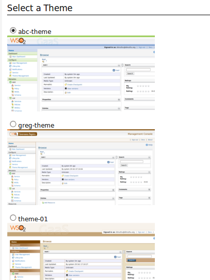
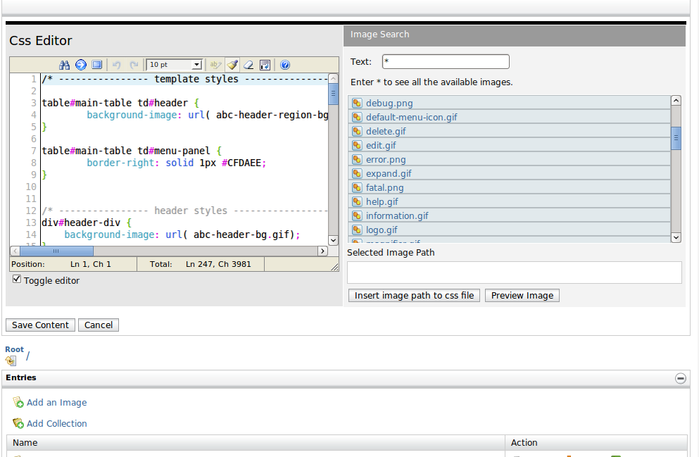

You can configure the themes of the UI from this page. This theme will be common to all users under your organization.
This provides several sections that allow you to configure the theme for your organization in several levels.
You can change the logo image of your theme (Mostly appear on the left top corner) to the logo of your organization.
Figure1: The Change The Logo Section
You can upload the logo image from either
This will show you a list of themes from where you can choose one for the theme of your organziation's account.
Figure2: The Select a Theme Section
This section allows you to edit the theme. You can add/remove images + edit the main css file to change your theme.
Note: This section is visible only for users with theme-management permission. You need to login to that. Figure3: Edit the theme